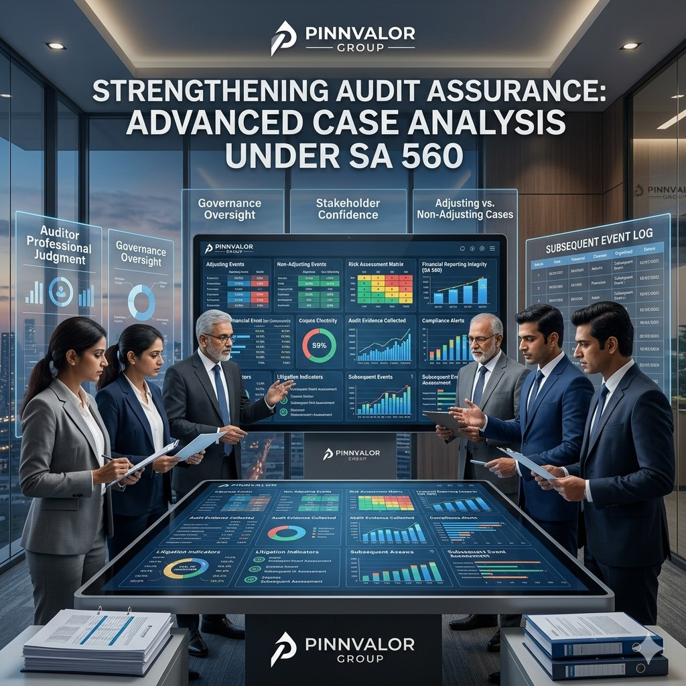

Strengthening Audit Assurance: Advanced Case Analysis under SA 560
In today’s dynamic business environment, significant events can occur after the reporting period but before the issuance of the auditor’s report. These events may materially affect the financial statements and influence stakeholder decisions. To address such situations, Standard on Auditing (SA) 560 – Subsequent Events establishes the auditor’s responsibilities regarding events occurring between the date of the financial statements and the date of the auditor’s report, as well as facts discovered after the report has been issued.
Could missing a critical subsequent event undermine the reliability of an entire audit?
The difference between an adjusting and non-adjusting event can be the difference between accuracy and misstatement. Professional skepticism remains an auditor’s strongest safeguard.
While the principles of SA 560 are straightforward, their practical application often involves complex judgments, intricate fact patterns, and high-stakes decisions. This article explores advanced case analyses under SA 560, helping auditors strengthen audit assurance while maintaining compliance with professional standards.
Understanding the Objective of SA 560
SA 560 aims to ensure that auditors obtain sufficient appropriate audit evidence regarding whether events occurring between the financial statement date and the auditor’s report date require adjustment or disclosure in the financial statements.
The standard categorizes subsequent events into:
- Adjusting Events: Events providing evidence of conditions that existed at the reporting date.
- Non-Adjusting Events: Events indicative of conditions arising after the reporting date.
The auditor must evaluate the impact of such events and determine whether management has appropriately adjusted or disclosed them in accordance with the applicable financial reporting framework.
Key Responsibilities of Auditors under SA 560
- Perform audit procedures designed to identify subsequent events.
- Review management’s assessment of subsequent events.
- Obtain written representations regarding subsequent events.
- Assess whether adjustments or disclosures are required.
- Respond appropriately to facts discovered after the auditor's report date.
- Protect users from materially misleading financial information.
Advanced Case Analysis 1: Major Customer Bankruptcy Before Audit Report Date
Scenario
A manufacturing company has a significant receivable balance from its largest customer as of March 31. On April 20, before the auditor signs the report, the customer files for bankruptcy due to financial difficulties that existed prior to year-end.
Audit Challenge
Determining whether the bankruptcy represents an adjusting event requiring revision of the receivable valuation.
Analysis under SA 560
The bankruptcy provides evidence that the customer’s financial difficulties existed at the reporting date. Therefore, this is an adjusting event.
Management should reassess recoverability and record an appropriate impairment loss or expected credit loss adjustment.
Audit Response
- Review bankruptcy filings and related documents.
- Evaluate historical collection patterns.
- Assess adequacy of impairment provisions.
- Verify revised financial statement disclosures.
- Consider implications for audit conclusions.
Advanced Case Analysis 2: Post-Year-End Fire Destroying Production Facility
Scenario
A company's primary manufacturing plant is destroyed by fire one month after year-end. The facility was fully operational and unaffected at the reporting date.
Audit Challenge
Determining whether financial statement adjustments are necessary.
Analysis under SA 560
Since the fire occurred after the reporting date and does not relate to conditions existing at year-end, it is a non-adjusting event.
However, the event is material and requires comprehensive disclosure to enable users to understand its potential impact on future operations.
Audit Response
- Assess materiality of operational disruption.
- Review insurance coverage and recovery estimates.
- Verify adequacy of disclosures.
- Evaluate going concern implications if significant.
Advanced Case Analysis 3: Litigation Settlement Revealing Existing Liability
Scenario
A company is involved in a lawsuit at year-end and has recognized a contingent liability. Before the audit report date, the case is settled, requiring a payment substantially higher than management’s original estimate.
Audit Challenge
Assessing whether the settlement provides evidence regarding conditions existing at the reporting date.
Analysis under SA 560
The settlement confirms the obligation that existed at year-end and provides additional evidence about the amount of liability.
Therefore, this constitutes an adjusting event requiring revision of provisions and related disclosures.
Audit Response
- Obtain settlement agreements.
- Consult legal confirmations.
- Reassess provisions and contingencies.
- Ensure compliance with applicable accounting standards.
Advanced Case Analysis 4: Discovery of Fraud After Financial Statement Approval
Scenario
After management approves the financial statements but before the auditor signs the report, an internal investigation reveals significant inventory manipulation that existed during the reporting period.
Audit Challenge
Determining the impact of newly discovered fraud on previously completed audit procedures.
Analysis under SA 560
The fraud relates directly to conditions existing at the reporting date. Consequently, financial statements may be materially misstated and require correction.
Audit Response
- Expand audit procedures.
- Reassess fraud risk factors.
- Evaluate management integrity.
- Perform additional inventory testing.
- Consider implications for the audit opinion.
Advanced Case Analysis 5: Acquisition Agreement Signed After Year-End
Scenario
A company signs a major acquisition agreement after year-end that significantly changes its future business structure and growth prospects.
Audit Challenge
Determining whether the transaction affects year-end financial statement measurements.

Analysis under SA 560
The acquisition arose after the reporting period and does not relate to conditions existing at year-end.
This is generally a non-adjusting event. However, disclosure may be necessary if the transaction is material to users’ understanding of the company’s future position.
Audit Response
- Review acquisition agreements.
- Assess transaction significance.
- Verify adequacy of disclosures.
- Consider future reporting implications.
Facts Discovered After the Auditor’s Report Date
One of the most challenging areas under SA 560 arises when auditors become aware of facts after issuing their report that could have affected the audit opinion.
Example Scenario
Three weeks after the audit report is issued, auditors discover that management concealed material liabilities existing before year-end.
Required Actions
- Discuss the matter with management and those charged with governance.
- Determine whether financial statements require revision.
- Perform additional audit procedures.
- Issue a new or amended auditor's report if necessary.
- Take steps to prevent reliance on the original report where appropriate.
Such situations often involve significant professional judgment and consultation with legal and regulatory advisors.
Common Challenges in Applying SA 560
- Distinguishing adjusting and non-adjusting events.
- Obtaining timely information from management.
- Evaluating complex litigation and regulatory matters.
- Addressing rapidly evolving economic conditions.
- Managing events affecting going concern assessments.
- Responding to post-report discoveries of fraud or misstatements.
Best Practices for Strengthening Audit Assurance
1. Maintain Continuous Communication
Regular discussions with management and those charged with governance improve awareness of significant post-balance-sheet developments.
2. Implement Robust Subsequent Event Reviews
Perform comprehensive procedures up to the date of the auditor's report, including inquiries, document reviews, and legal confirmations.
3. Strengthen Professional Skepticism
Auditors should critically evaluate management representations and independently verify significant events whenever possible.
4. Focus on High-Risk Areas
Special attention should be given to receivables, litigation, financing arrangements, going concern matters, and related-party transactions.
5. Document Judgments Thoroughly
Comprehensive documentation supports audit conclusions and demonstrates compliance with professional standards.
The Growing Importance of SA 560 in Modern Audits
Global economic uncertainty, technological disruption, cybersecurity incidents, geopolitical developments, and regulatory changes have increased the frequency and significance of subsequent events. As organizations operate in increasingly volatile environments, auditors must remain vigilant in identifying and evaluating events that may impact financial reporting.
The ability to properly assess subsequent events is no longer merely a compliance exercise—it has become a critical component of audit quality and stakeholder confidence.
Conclusion
SA 560 plays a pivotal role in ensuring that financial statements reflect all material information available before the auditor’s report is issued. Advanced cases often require auditors to exercise substantial professional judgment while balancing technical requirements, stakeholder expectations, and audit quality objectives.
By understanding complex subsequent event scenarios, implementing robust review procedures, and maintaining professional skepticism, auditors can strengthen audit assurance and enhance the reliability of financial reporting. In an environment where critical events can emerge rapidly, mastery of SA 560 remains essential for delivering high-quality audits and protecting stakeholder trust.